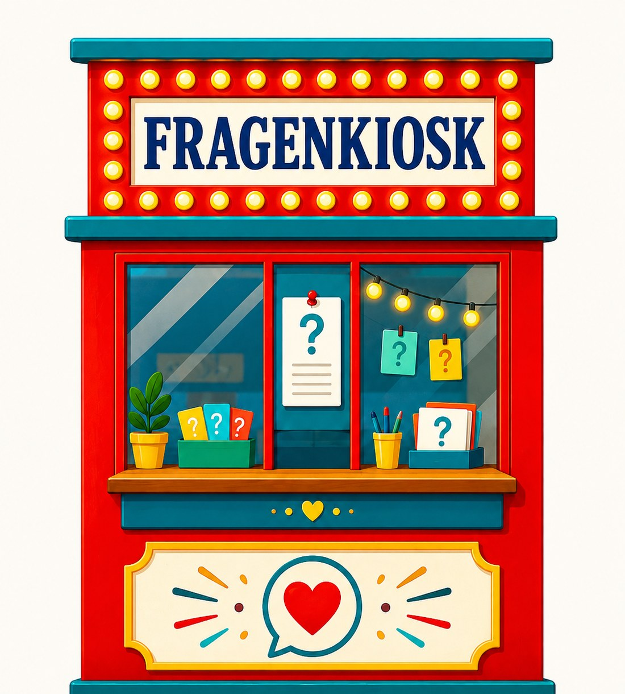

Fragenkiosk
Sondern Fragen zum Mitnehmen. Wie am Kiosk – nur dass du diesmal etwas ziehst, das noch ein Stück mit dir weitergeht.
Zum Mitnehmen
Zieh eine Frage und nimm sie mit in deinen Tag. Lies sie langsam. Antworte nicht sofort – lass sie wirken.

Bereit für deine Frage?
Die Idee
Antworten gibt es überall: Tipps, Ratgeber, Meinungen. Spannender ist manchmal die Frage, die man sich selbst nicht stellt. Eine gute Frage gibt dir nichts vor. Sie bleibt bei dir, verschiebt vielleicht etwas – und lässt dich selbst weiterdenken.
Das ist auch die Idee hinter ide Chraft: Nicht jemand von aussen soll dir sagen, was richtig ist. Eine gute Frage kann dir helfen, selbst genauer hinzuhören.
Das Angebot
Manchmal willst du keine zufällige Frage, sondern eine, die wirklich zu dem passt, was dich gerade beschäftigt.
Ein paar Sätze dazu, wo du gerade stehst – per Formular oder E-Mail. Kein Lebenslauf nötig.
Ich lese mir in Ruhe durch, was du mir schreibst, und formuliere daraus eine Frage für dich. Keine Vorlage – sondern eine Frage, die aus dem entsteht, was du mir erzählst.
Du erhältst deine Frage als Foto einer von Hand geschriebenen Karte – persönlich für dich formuliert und aufgeschrieben.
Bezahlt wird unkompliziert per Twint. Deine Frage kommt innerhalb von 3–5 Werktagen bei dir an.
Persönliche Frage anfragenDeine persönliche Frage
Schildere mir deine aktuelle Situation. Du erhältst keine fertige Lösung, sondern eine oder mehrere persönliche Fragen, die dir helfen können, anders hinzuschauen und deinen eigenen nächsten Schritt zu finden.
Jetzt fehlt nur noch die Bezahlung mit Twint.
Mit TWINT bezahlenNach Zahlungseingang erhältst du deine persönlichen Fragen per E-Mail.
Noch mehr Fragen
Gute Fragen funktionieren nicht nur allein. «Fragerei» habe ich gemeinsam mit einem guten Freund gegründet, damit aus Alltag wieder echte Gespräche werden können – mit Freundinnen und Freunden, mit Menschen, die man gerade erst kennenlernt, am Küchentisch oder unterwegs.